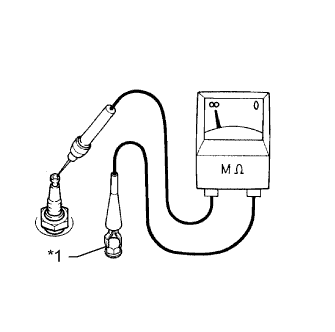
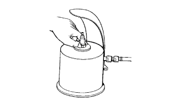

СИСТЕМА ЗАЖИГАНИЯ > ПРОВЕРКА БЕЗ СНЯТИЯ С АВТОМОБИЛЯ |
| 1. ПРОВЕРЬТЕ КАТУШКУ ЗАЖИГАНИЯ И ИСКРУ НА МАССУ |
Проверьте коды DTC (Нажмите здесь).
Убедитесь в наличии искры.
Снимите катушки зажигания и свечи зажигания (Нажмите здесь).
Установите свечу зажигания в катушку зажигания и подсоедините разъем катушки зажигания.
Отсоедините 4 разъема форсунок.
Соедините свечу зажигания с массой.
Визуально проверьте, что при прокручивании двигателя возникает искра.
Порядок проверки искры на массу.
Проверьте надежность подключения разъема катушки зажигания (с усилителем зажигания) со стороны жгута проводов.
| Результат | Порядок выполнения |
| NG | Подсоедините надежно |
| OK | Перейдите к следующему шагу |
Выполните проверку "искры" на массу для каждой катушки зажигания с усилителем зажигания.
| Результат | Порядок выполнения |
| NG | Замените катушку зажигания с усилителем зажигания. |
| OK | Перейдите к следующему шагу |
Проверьте свечу зажигания.
| Результат | Порядок выполнения |
| NG | Замените свечу зажигания. |
| OK | Перейдите к следующему шагу |
Проверьте питание катушки зажигания с усилителем зажигания.
| Результат | Порядок выполнения |
| NG | Проверьте проводку между замком зажигания и катушкой зажигания с усилителем зажигания. |
| OK | Перейдите к следующему шагу |
Проверьте датчик положения распредвала (Нажмите здесь).
Проверьте датчик положения коленчатого вала (Нажмите здесь).
Подсоедините 4 разъема форсунок.
Установите 4 катушки зажигания и 4 свечи зажигания (Нажмите здесь).
| 2. ПРОВЕРЬТЕ СВЕЧУ ЗАЖИГАНИЯ |
Проверьте электрод.
|  |
С помощью мегомметра измерьте сопротивление изоляции.
| Подключение диагностического прибора | Условие | Заданные условия |
| Свеча зажигания (контакт) - масса | Всегда | 10 МОм или более |
| *1 | Масса |
Альтернативный метод проверки:
Быстро разгоните двигатель до 4000 об/мин 5 раз.
Снимите свечу зажигания.
Осмотрите свечу зажигания.
Если электрод сухой, свеча зажигания работает должным образом. Если электрод влажный, перейдите к следующему шагу.
Убедитесь в отсутствии повреждений резьбы и изолятора свечи зажигания.
При наличии повреждений замените свечу зажигания. При отсутствии повреждений установите свечу зажигания на место.
| Изготовитель | Тип свечи зажигания |
| DENSO | SK20HR11 |
| NGK | ILFR6C11 |
Проверьте межэлектродный зазор свечи зажигания.
|  |
Очистите свечи зажигания.
При наличии на электроде следов влажного нагара очистите электрод с помощью прибора для очистки свечей зажигания, а затем высушите его.